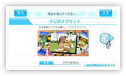
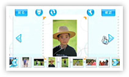

|
 |
| 福永 |
『デジカメプリントチャンネル』は任天堂と共同してＷｉｉで行っている写真のプリントサービスです。ＳＤカードに保存されたデジカメや携帯電話の写真を、Ｗｉｉの『デジカメプリントチャンネル』から注文していただくと、富士フイルムイメージングでプリント生産してお客様にお届けしています。
富士フイルムは以前からお店やインターネットで写真プリントサービスを提供していますが、フォトライフの変化にあわせた新しいチャンネルでも提供したいと考えていました。 |
| N.O.M |
写真の現像サービスはさまざまあると思うのですが、『デジカメプリントチャンネル』のポイントはどこでしょうか？ |
| 福永 |
一番大きいのは、家族でリビングのテレビに映った写真を見て、思い出を語りながらプリントするものを編集するという楽しみが味わえるところですね。当社の店頭機やネットサービスではできなかった、新しい魅力を引き出すことができたのかなと思います。 |
| 我妻 |
最近はインターネットサービスを通じて写真プリントを注文するというのも一般化しつつありますが、パソコンってどうしても１人でモニターに向かう形になってしまうんですよね。「注文する」というところには集中できるんですけど、お父さんがパソコンの前に座ってパソコンを操作するような形が多いようです。『デジカメプリントチャンネル』では、家族でわいわい楽しんで、会話をしながら注文するというところが、今回のＷiiらしい楽しみ方の１つになるのかなと思っています。
カメラがデジタル化されたことで、ハードディスクの中に画像が埋もれるようになってしまったんです。以前だと、撮ったものは現像して写真にするしか見る方法が無かったのですが、デジカメになると撮ったその場ですぐに見られるようになって、そこでほぼ満足してしまうんですね。後は、パソコンの中にデータを入れたらおしまいで、撮ったものを振り返らなくなっている。 |
| N.O.M |
たしかにアルバムを見返すように１枚の写真を見てみんなで楽しむ機会は少なくなってきた気がします。撮った写真を人にあげるときも、データであげるとそこで終わってしまいます。 |
| 山名 |
そして、保存した写真がパソコンのどこに入れたか分からなくなったりとか。 |
| 我妻 |
写真は後で見て、撮ったときの記憶が蘇ってきて会話が弾んだりと、とても良いコミュニケーションツールなんです。それが埋もれてしまって活用される機会がなくなっているという現状は、フォトライフとして非常にもったいない。そういう埋もれてしまった写真を引っ張り出してきて見る機会を作っていただくというのは非常に大きなテーマですね。それにはもちろん、プリントしていただくのが一番いいのですけれど。 |
| 山名 |
デジカメや携帯電話のカメラ機能もあって、写真を撮ることは身近になっていて、フイルムカメラの頃と比べるとショット数は明らかに増えているんです。その分、たくさんの写真が埋もれてしまっているんですね。それぞれの一瞬を切り取った大切な写真が実はいっぱいあるはずなのに。 |
| 我妻 |
後から写真を見る楽しさが、デジカメだとそのときだけで終わってしまうことが多いんです。
|
| N.O.M |
『デジカメプリントチャンネル』なら、写真を注文するときと写真を注文した後で、家族で写真を見返す機会ができますね。 |